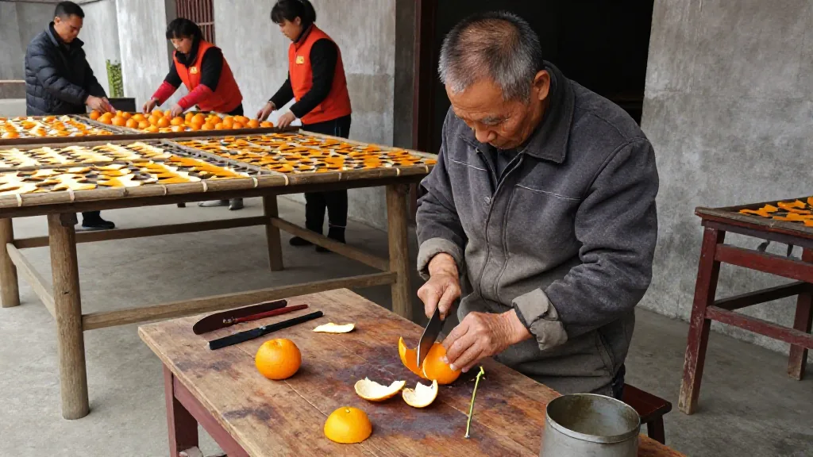
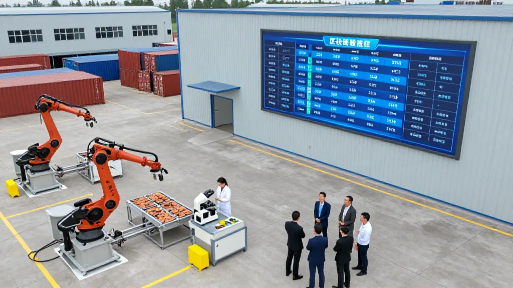

一、央視曝光：千元「老陳皮」成本僅幾十元

今日，陳皮圈最受關注的事件，無疑是央視《財經調查》欄目曝光的假陳皮產業鏈——外地「工藝皮」搖身變「正宗新會老陳皮」，利潤最高達成本二十倍。報道指出，不少所謂「正宗新會老陳皮」，實為廣西等地的低價「工藝皮」，經簡單處理後貼上新會陳皮地理標誌，流入市場。
業內人士披露，此類「工藝皮」一個月陳化成本約70至75元，而真正自然陳化三年、每二十斤柑肉方出一斤陳皮的傳統工藝皮，成本高達150至200元。不法商家通過產地虛標與年份造假，利潤最高可達成本的二十倍以上。
「正規渠道出來的陳皮，多少錢一斤我們心裡有數。那些號稱十年、十五年的便宜貨，十有八九有問題。」
消息一出，消費者信任再度受挫，短期內引發市場對低價陳皮的觀望情緒，同時推動品牌企業與溯源體系的關注度提升。
二、專項整治再加碼：11噸假冒陳皮被銷毀
2026年，广东省江门市市场监管局牵头，联合公安、农业农村等部门，在新会区举办新会陈皮保护专项销毁活动，集中无害化处置罚没陈皮产品11吨，并邀请人大代表、政协委员及媒体全程监督。
截至2026年7月8日，全市市场监管系统累计检查相关经营主体22146家次，立案查处违法案件311宗，罚没金额374.69万元。行动聚焦种植、加工、仓储、包装及线上销售全链条，严打商标侵权、虚假标注、伪造产地等违法行为。
「這次行動不是走過場，是以後常態化監管的起點。每一宗案件都上網可查，溯源鏈條必須閉合。」
江门市监局明确，将推进《地理标志产品质量要求 新会陈皮》国家标准制定，启动2026年度新会柑鲜果产量线上登记申报，从源头锁定陈皮总量，杜绝无限虚标乱象。
三、柑肉「變廢為寶」：3.8億投資撬動70億產值

走进仲秋的江门市新会区街头，药材清香扑面而来。在新宝堂陈皮有限公司旗舰店里，员工们正忙碌打包陈皮礼盒并发往全国。然而董事长陈柏忠的精力已延伸至另一幅蓝图——今年4月，新宝堂公司与五邑大学达成产学研合作，携手攻关新会柑肉综合利用技术，目标是将其转化为农业级有机肥和食品级酵素产品。
产业痛点：新会每年约25万吨柑肉被废弃——新会柑「留皮弃肉」传统导致柑肉成为垃圾，每车清运还需向环卫部门支付30至50元。
「願意啃柑肉加工這塊'雞肋'的，新寶堂是新世紀以來第一家，也是迄今為止唯一的一家。」
该項目總投資3.8億元，廠房占地8.3萬平方米，預計為產業帶來高達70億元的預期產值，將作為新寶堂獨立子品牌，嵌入「高科技+養生文化+旅遊」的現代健康產業鏈條，實現「以皮帶肉、以肉養皮」的產業閉環。
四、六真溯源：數字化重建信任基石

2025年12月12日，中国陈皮贸易中心在新会正式启动运营。该中心立足全国，致力于构建覆盖「种苗—种植—加工—仓储—金融—贸易—品牌—文化」全产业链的一站式服务枢纽。
物理空间建设高标准、智能化的陈皮仓储物流基地，配套恒温恒湿陈化仓、区块链溯源系统与权威质检中心；数字空间打造线上交易平台，实现陈皮现货、期货、仓单质押、供应链金融等多元化电子交易，旨在形成具有全球影响力的「新会陈皮指数」。
「靜態的陳皮存貨，我們要讓它們變成可以流動的資產。'陳皮貸'、倉單質押融資、收益權信托，這些金融工具正在讓中小農戶和經銷商不再為資金發愁。」
新會陳皮行業協會明確提出，全力護航產業邁向2035年500億元產值目標，推動產業從「地理標誌」向「數據資產」躍升。
常見問題
如何識別假陳皮？一看價格：低於市場均價過多的「老陳皮」需警惕；二看溯源：正規新會陳皮均有數字化溯源二維碼；三看外觀：自然陳化陳皮顏色深淺不均，油室通透；工藝皮顏色烏黑均勻，質地脆硬；四聞香氣：自然陳化有柑果香和陳香，工藝皮有焦糊味或異味。
六真溯源標準是什麼？「六真」即真產地、真品種、真年份、真工藝、真倉儲、真溯源。通過區塊鏈技術記錄從柑園到茶杯的全過程數據，每一片陳皮的身份信息不可篡改。
新會陳皮目前價格區間？核心產區新皮約100至155元/斤；7年陳皮批發價約1800至3500元/斤；15年陳皮價格已突破3000元/斤，部分稀缺年份產品每斤售價可達萬元。
陳皮學院主要研究什麼？五邑大學陳皮學院聚焦陳皮年份鑑定、無損檢測、活性成分提取等產業關鍵技術難題，為產業提供科學支撐。